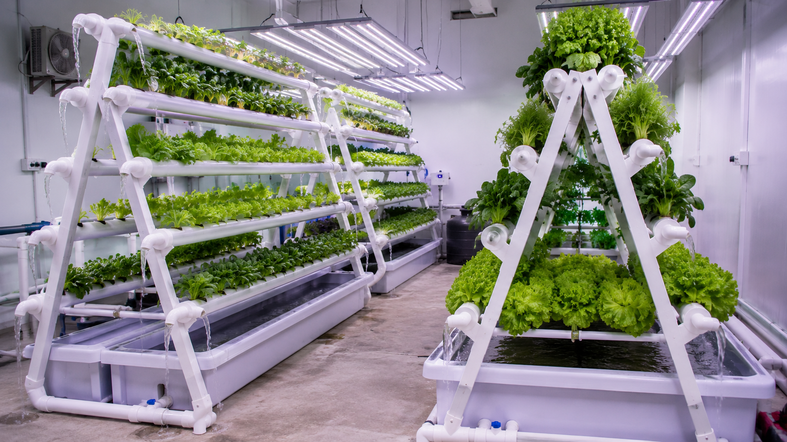

🥬 Slaai
🌿 Mostert Spinasie
🍓 Aarbeie
🌱 Spinasie
⚡ EC · pH · TDS · O₂
NFT A-Raam Stelsel
GroeiGids
Die Volledige Handleiding
A-Raam NFT Stelsel — Hidroponiese Opstelling

2
A-Rame
4
Kante
5
Pype / Kant
20
Totale Pype
1–2
L/min Vloei
Serie
Vloei-tipe
📊 EC · pH · TDS Beheer
🌡️ Temperatuur Monitor
📋 "Range Cards" ingesluit
🔄 Daaglikse Kontrolelys
🌱 Saailing tot Oes